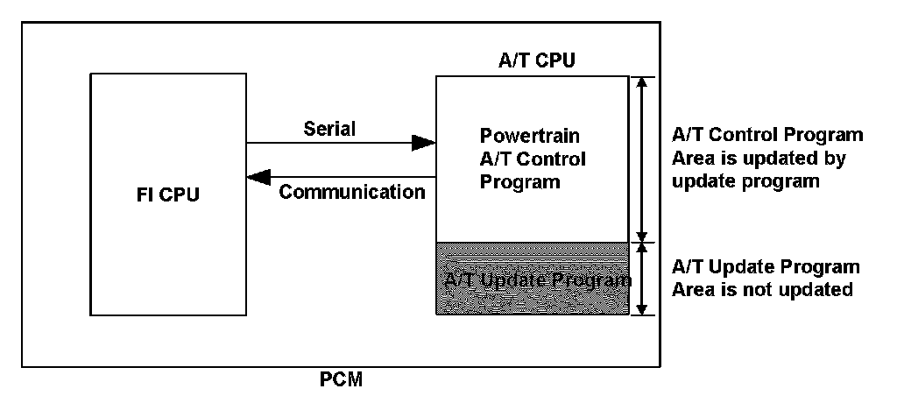
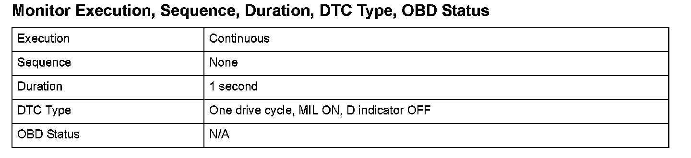
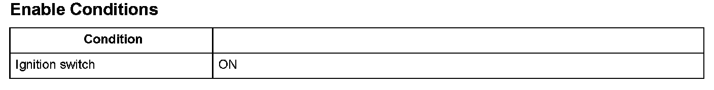

Advanced Diagnostics
DTC P16C0: Powertrain Control Module (PCM) A/T Control System Incomplete Update
General Description
The control program in the powertrain control module (PCM) has a rewriting function that can be done in the field. The program in the CPU is classified into a powertrain control program (re-writable program) and a program for the rewrite function (non-re-writable program), and the program rewrite function only rewrites the powertrain control program.
When the program rewriting process is not finished normally due to an irregular process, such as turning off the PCM power during the A/T CPU re-writing process, and the ignition switch is turned on again, the A/T CPU starts according to the rewriting function program, and this DTC is sent to the FI CPU via serial communication and stored in the PCM.

Monitor Execution, Sequence, Duration, DTC Type, OBD Status

Enable Conditions
Malfunction Threshold
The program rewriting process does not finish normally due to an irregular process, such as turning off the PCM power during the A/T CPU rewriting process, and the ignition switch is turned on again.
Diagnosis Details
Conditions for illuminating the MIL
When a malfunction is detected, the MIL comes on and the DTC and the freeze frame data are stored in the PCM memory.
Conditions for clearing the MIL
The MIL will be cleared if the malfunction does not recur during three consecutive trips in which the diagnostic runs.
The MIL, the DTC, and the freeze frame data can be cleared by using the scan tool Clear command or by disconnecting the battery.